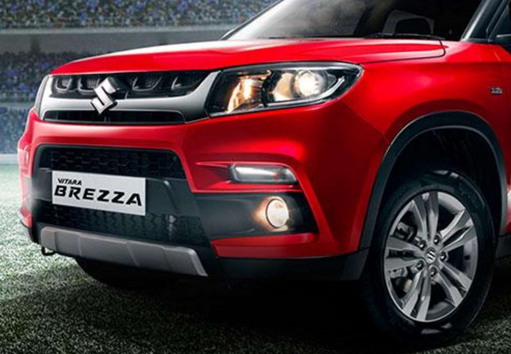
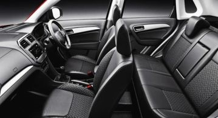
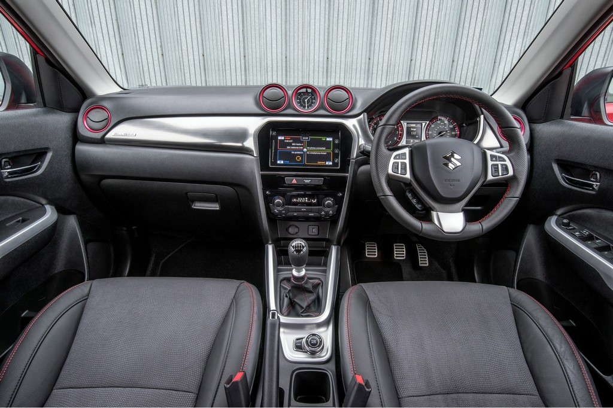
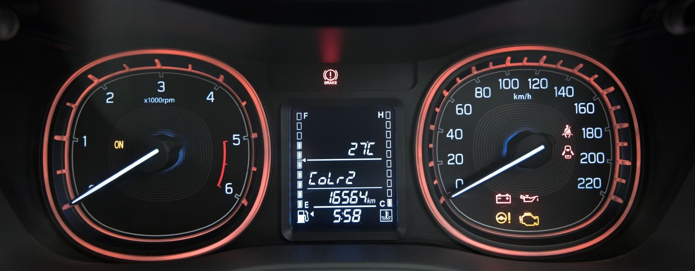

MARUTI SUZUKI BREZZA AGS
If style is what defines you. If everything that’s bold excites you.If brilliance is what you seek. And if, glamour is your thrill.Then, get ready to allure the town with the glamorous new look and bold design of the Vitara Brezza.
REVIEW
The Vitara Brezza draws on Suzuki's SUV heritage that has seen limited yet noticeable success the world over with the Vitara nameplate. The larger CR-V-sized Vitara may still come to India and so the linkage to a true blue (almost!) SUV is a good idea for the baby Vitara then.The Vitara Brezza has found three lakh homes in a little over two years. We did the math, too. Maruti’s compact SUV has been on the market for 846 days. That translates to 345 cars per day, nearly 15 units per hour and one Brezza every four minutes. The inoffensive boxy styling, frugal diesel engine and sound practicality put together makes the Brezza a potent package. The prices of Vitara Brezza diesel variants start at Rs. 7.52 lakh and the top-end diesel is priced at Rs. 10.49 lakh. Maruti Vitara Brezza is available in 9 variants and 9 colours.

Maruti Suzuki Vitara Brezza, with its stylish yet sporty look, takes glamour to a new level. Its masculine exterior complemented by the contemporary interiors make for an ideal ride.The Vitara Brezza is under 4 metres in length at 3995 mm, which means Maruti Suzuki gets an excise duty benefit on it. Throw in the recent cess thrown at the auto sector in the Union Budget and that excise cut becomes even more valuable when you compare to rivals like the Hyundai Creta (which is larger though, and not sub-4 metre). The Vitara Brezza has good proportions despite being that short in length. The car sits tall at 1640 mm, is reasonably wide at 1790 mm, and has a generous wheelbase of 2500 mm. It has an attractive design, looks modern and has some cool colour options and customisations possible - including body graphics and colour strips on the wheels to match the paintwork.Looks aside, the Brezza’s sub-four-metre length made it easy to manoeuvre during rush-hour madness and slot into tight parking spots. Also, the high seating gives you a nice view of your surroundings.

The creep function is there too on the Vitara Brezza AMT (like in the Tata Nexon AMT), which helps achieve smoother take-off! The gears change is much smoother now and I am quite impressed to find that there is a recalibration on the system based on throttle input. So, if you're driving in city traffic, you will get the little tug when gears change - coupled with that split second lag. However, when you are keen to get sporty, and push the pedal to the metal, the gears hold much longer - all the way to say 4500 rpm in 3rd gear, for instance. This allows the car to move much quicker, and for you to get a better response than you'd expect from an AMT. The same is partly true for downshifts too. The gears hold longer - when coasting along, or slowing down in traffic. And if you want a quick downshift, push the throttle down and a kickdown like response gets the car to drop a gear much quicker. And a lot smoother too!

The first impression you get when you begin driving the car is that this is almost like a Swift in heels. Which in some ways isn't a stretch of the truth! But the point isn't to be uncharitable! The Vitara Brezza does not handle like the Swift though which is a lot sportier. The car feels a bit imprecise and lacks the sharpness that we have seen with the S-Cross and Baleno off late. It also lacks steering precision which I felt was a bit of a let down after the brilliant steering we have seen on the recent cars.The expectation from Maruti was of a soft suspension, but instead you get a very mature feel from the car. And what is more it swallows up bad roads and potholes without being mushy. The car's ride is very good, and you will find long drives a breeze, with occupant comfort being a major plus as compared to some of the other compact SUVs.

The fact that Maruti is offering driver airbag as standard and the passenger airbag and ABS as optional even on the base variant is very good. Finally we are seeing this becoming a consistent theme from the market leader, which I applaud wholeheartedly.Vitara Brezza comes equipped with dual airbags, Anti-lock Braking System with EBD, Suzuki TECT and rear parking sensors. What's more, it's certified for offset and side impact crash test norms along with pedestrian safety compliance.
So the Vitara Brezza AMT gets ISOFIX restraint for child seats, a speed limiter warning alert that you can set, reverse-parking sensors, seatbelt pre-tensioners and force limiters, and like I mentioned before - dual airbags and ABS with EBD.

The cabin isn't as roomy as the larger compact SUVs but will serve a 4 or 5 member family well. The rear seat has a lap belt for the centre passenger though, which isn't great. The seat itself is neat, and its base flips up and allows the backrest to fold down to create a full flat cargo floor - that's great! The split is 60:40, and so accommodating a good amount of luggage and cargo of all shapes and sizes would be fine.The Vitara Brezza has a sharp and well finished cabin. Again here the recent efforts with the Nexa cars has helped and so Maruti begins the new innings for this model at a higher benchmark. Plastics, fabric and other materials are subtle and classy. The material quality is good too, and you get a fair amount of equipment at the high end, including a cool box, reverse camera, big infotainment system screen with navigation, and yes - Apple CarPlay.

The Vitara Brezza provides a relaxing drive with low noise and vibration entering the cabin. The Pendulum engine mount system
and state-of-the-art noise insulation and absorption materials ensure that there's always low noise, vibration and harshness. For
the smoothest drive and the smoothest play. With the manual, the fuel efficiency (21.7kmpl in the city, and 25.3kmpl on the highway) will definitely keep a smile plastered on your face. While it does drop down a little in the AMT (17.68kmpl in the city, and 20.91kmpl on the highway), it still stays ridiculously efficient.
